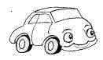

|
 previous / next column
A PHYSICIST WRITES . . .
(October 2003)
Previously when we have visited Eire we've taken a flight over and hired a car there, sometimes arranging to return it to a different airport to allow a longer tour. This year we decided to take our own car and head straight for our favourite corner, the far south-west. If you are tempted to do the same sometime, the easy way is to sail overnight on the Swansea-Cork ferry - avoiding the occasions when it uses the more distant Pembroke instead (because of the tide, I believe).
[Alas, this route was closed permanently in 2012.]
At Pembroke (we found), as soon as you have exchanged your ticket for a boarding-card you have to give it up again and then continue queuing. Perhaps they are short of cards! On the vehicle deck of the ferry the crew stand right in front of you, quite blind to the risk of clutch-foot twitch as they urge you towards the car ahead.
Upstairs, recliners are provided for the 9 or 10 hour voyage, but they are not recommended. We treated ourselves to a cabin and so were in fairly good shape to watch a beautiful sunrise as the boat entered Cork Harbour.
The fast roads from Cork out to the west are the R586 across to Bantry and the N22 up to Killarney - but a look at the map makes it hard to resist trying the minor roads, if only to see whether the landscapes they pass through match the attractiveness of their Irish names (they do!).
These roads are almost free of traffic, and their surfaces and undulations encourage you to relax and keep to a steady speed. But even the fast roads have intermittent slow lanes and hard shoulders which you could use to avoid holding up other traffic while you take in the scenery (not to mention the fuschia growing wild in every hedgerow).
From the Dingle peninsular southwards, five mountainous fingers of land stretch out into the Atlantic. A circuit out and back along any one of them is a dramatic drive, especially if you turn off and venture to the very tip of the finger. The panoramas of hills and bays are probably the more stunning if you take the clockwise circuit (this also reduces the driving into the sun). However, the famous Ring of Kerry is driven anticlockwise by most traffic including tour coaches. Some of the views from the roads that cross the peninsulars are even more spectacular, if that is possible.
Apart from the arrival of the euro, not much seems to have changed in SW Ireland during the 17 years we have been visiting together (Mrs S is half-Irish, so she has seen many changes across the country). The distances on road signs are still a confusing mixture of old miles (black on white) and new kilometres (white on green, or at least marked in km). The speed-limit signs are all in mph, but will be changed to km/h in January 2005 - you have been warned!
The Irish people are as amicable and as welcoming as ever. They never pass you on a rural road without raising a hand or at least a friendly finger. We once paid a return visit to stay at a farmhouse overlooking Bantry Bay, that time bringing my parents on their first trip to Ireland. The lady of the house eyed my father (a retired bank official) up and down, and said: "Well you can take that tie off, now - you're supposed to be on holiday!"
And now we are back again, taking in a slightly different view of this beautiful landscape, from a cottage. Because out here you are so far west, the sun rises and sets a relaxing half-hour later than at home. I would attempt to explain the brilliance of the sunsets and the bay reflections in terms of physics, but I'm on holiday too...
Admittedly, you can't expect to see the sun here every day - but Irish rain is well described as 'soft'. It need not stop you setting out to make a proper comparison between say Guinness, Murphy's and Beamish, if you are within reach of a bar or two. And if that doesn't knock you out, the heady Atlantic air certainly will.
Peter Soul
previous / next column
|